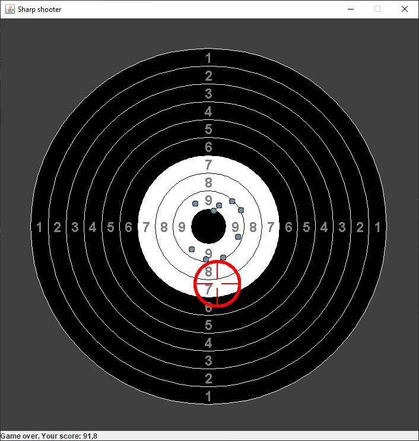

Target on the Canvas with the following requirements:

The game we are developing can be specified as follows::
There is a fixed target in the center of the playing field.
The player uses the keyboard to move the gun sight to the center of the target.
After aiming, the player presses the button and thus makes a shot.
The closer the gunshot to the center of the target, the more points the player gets.
The goal of this game is to score as many points as possible in a limited number of attempts.
Also, we will add some special effects to decrease shooting precision.
A possible version of the complete game demonstrates in the following figure. 
In this stage, we will create a game field and graphical objects.
You will construct three graphical objects:
Target is a family of concentric circles. The Target always stays still.Gun Sight indicates the location of the intended shot.Hole of Bullet points a traces of gunfire. They will appear as the shots happen.Create the main window of the program with two parts:
Statusbar - JLabel. Due to testing reasons, you need to set the name Statusbar to it.Statusbar is intended to inform the player and must contain some text.
Canvas - extends JPanel. Due to testing reasons, you need to set the name Canvas to it.Canvas should be in focus.
You should draw the Target on the Canvas with the following requirements:
The center point of the Target should be at (350, 350).Target should contain ten concentric circles with incrementing of radius in 30 pixels.Color.BLACK and Color.WHITE, and alternate as shown in Example 1.Target should be Color.DARK_GRAY.Target should be fully inserted into the Canvas without clipping.You should draw the Bullet hole on the Canvas with the center at the point (300, 500)
with a color different from Color.BLACK, Color.WHITE, Color.DARK_GRAY.
You can define the size of the Bullet hole on your own. As an option, it may be a circle with a radius of 5 pixels.
You can draw the Gun Sight at your discretion.
As a result, you should have something like in Example 1.